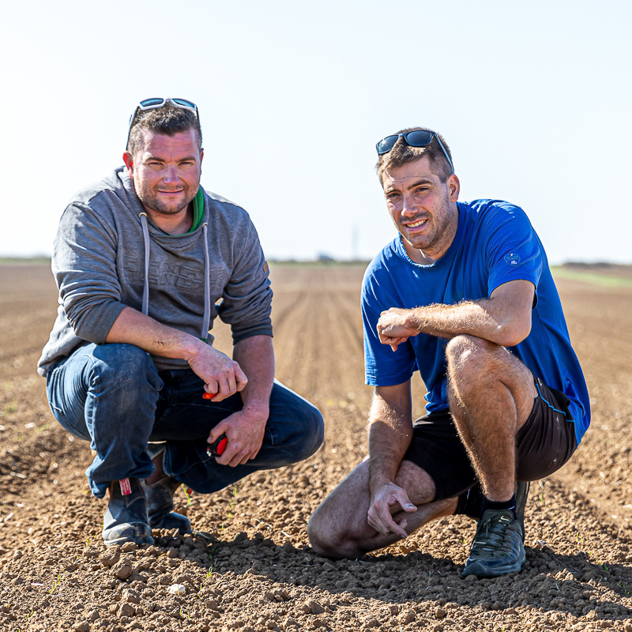
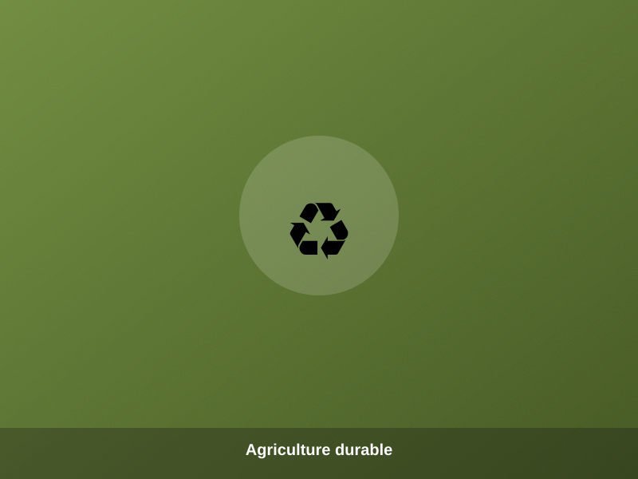
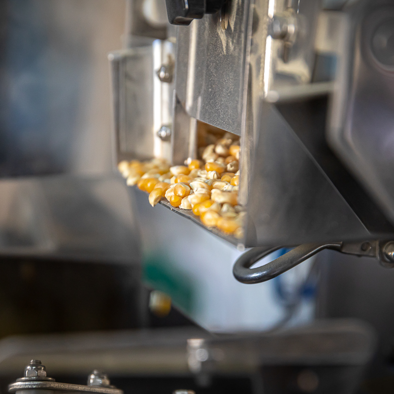
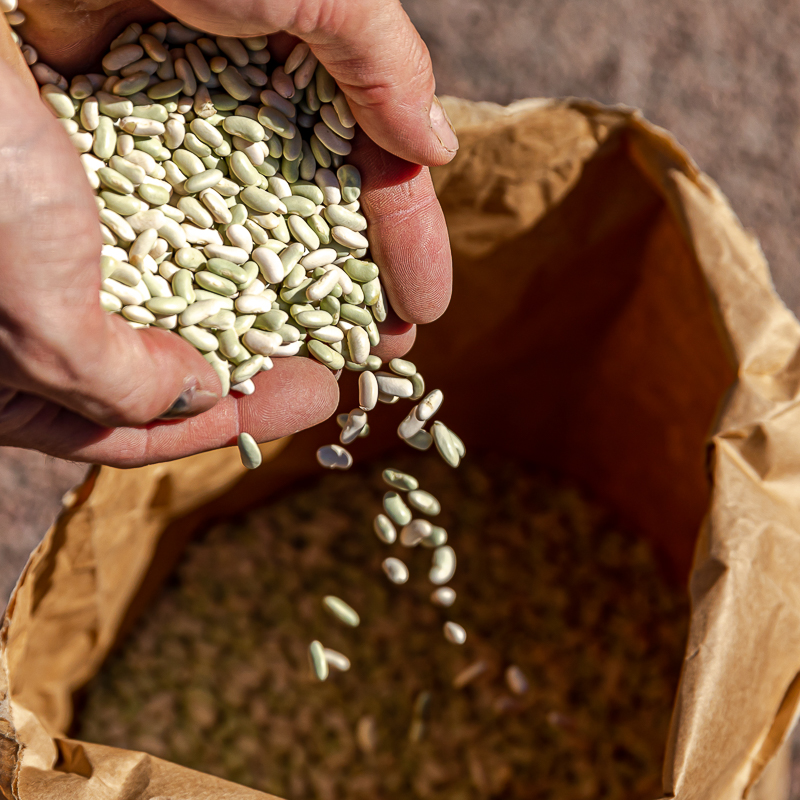

Bio & certifications
100% de notre exploitation est certifiée Agriculture Biologique (FR-BIO-01). Nous sommes également reconnus « Artisans Militants de la Qualité » et « C du Centre — Produit en région ».
Depuis 6 générations, Jérémy et Jonathan cultivent 142 hectares en agriculture biologique au cœur de la Beauce. Découvrez notre histoire et nos engagements.

Entreprise familiale depuis 6 générations, la Ferme des 3 Rois est une exploitation de 142 hectares située au Puiset, en plein cœur de la Beauce (Centre-Val de Loire). Jérémy et Jonathan Desforges ont repris les terres céréalières de leur père Jean-Louis en 2018 et entrepris, dès 2020, la conversion en agriculture biologique de toute l'exploitation.
La ferme produit aujourd'hui des légumes secs, des plantes potagères, des céréales, des légumes et des graines de tournesol bio, dans le plus grand respect des terres. Tous ces produits sont commercialisés sous la marque Trésors de Beauce, pour les particuliers, et en direct pour les professionnels sous le nom Ferme des 3 Rois.
« Depuis 6 générations, à la Ferme des 3 Rois, nous perpétuons le travail de la terre avec passion et amour. Nous cultivons nos céréales, graines et légumineuses en 100% biologique afin de respecter l'environnement et notre terre. »
— Jérémy & Jonathan, agriculteursCertifications, agriculture durable, circuit local et impact environnemental : découvrez les piliers de notre engagement paysan.

100% de notre exploitation est certifiée Agriculture Biologique (FR-BIO-01). Nous sommes également reconnus « Artisans Militants de la Qualité » et « C du Centre — Produit en région ».

Rotation des cultures, fertilisation naturelle, préservation des sols et de la biodiversité : une haute technicité bio pensée pour durer.

Notre transformation est réalisée à la ferme, sur une chaîne de tri de pointe, puis vendue en circuit court en Eure-et-Loir, en région Centre et en Île-de-France.

Emballages 100% home-compostables ou recyclables, transport limité au local : nous réduisons notre empreinte à chaque étape.
Céréales, légumineuses, graines et légumes 100% bio, cultivés et conditionnés sur notre exploitation.